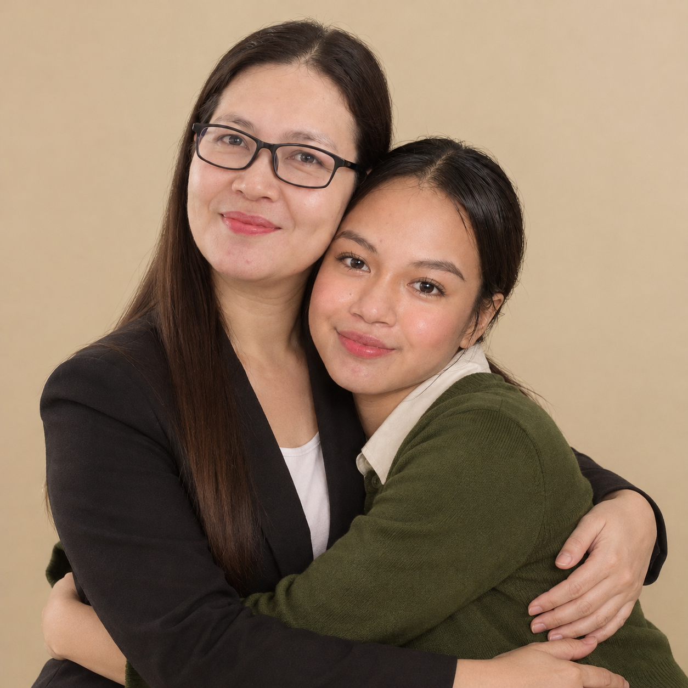

L.Mother's photo
images/mother.png
images/mother.png
MY MAMA
Leah C. Garin
My mother holds a special place in my story. This tribute is my way of recognizing her place in my life and expressing gratitude for the care and support that have helped shape my journey.